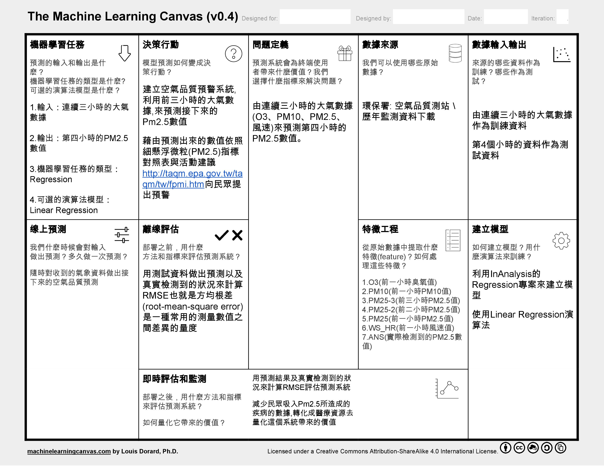

迴歸目的在於了解兩個或多個變數間是否相關、相關方向與強度，並建立數學模型以便觀察特定變數來預測研究者感興趣的變數。
機器學習畫布
 Machine Learning Canvas_RegressionValue Propositions
藉由波士頓房產資料建立房價回歸模型，以預測新的房產價格。
Data Sources
UC Irvine Machine Learning Repository: Boston Data Set
Collecting Data
資料取出80%作為訓練檔，剩下的20%作為測試檔
Features
資料欄位說明：
1 - CRIM:per capita crime rate by town
2 - ZN:proportion of residential land zoned for lots over 25,000 sq.ft.
3 - INDUS:proportion of non-retail business acres per town
4 - CHAS:Charles River dummy variable (= 1 if tract bounds river; 0 otherwise)
5 - NOX:nitric oxides concentration (parts per 10 million)
6 - RM:average number of rooms per dwelling
7 - AGE:proportion of owner-occupied units built prior to 1940
8 - DIS:weighted distances to five Boston employment centres
9 - RAD:index of accessibility to radial highways
10 - TAX:full-value property-tax rate per $10,000
11 - PTRATIO:pupil-teacher ratio by town
12 - B:1000(Bk - 0.63)^2 where Bk is the proportion of blacks by town
13 - LSTAT:% lower status of the population
14 - MEDV:Median value of owner-occupied homes in $1000's
Building Models
用Linear Regression演算法建立預測模型
模型訓練流程
0.Data Input
檔案上傳
 Data Upload： Select Process Stage
Data Upload： Select Process Stage
 Data Upload： Select Function
Data Upload： Select Function
1.Data Pre-process
從Function欄位中, 選擇Data Pre-processing按鈕, 可進行資料預處理(Pre-process)
 Data Pre-view
Data Pre-view
2.Feature Selection
利用Pearson Correlation演算法計算各個Feature間的關係程度,以作為選擇Feature的參考
 Calculate Pearson Correlation
Calculate Pearson Correlation
 Show Feature Weight Matrix
Show Feature Weight Matrix
 Select Feature and Save
Select Feature and Save